MNBLad Kullanma Kılavuzu
MNBLad, ESP32-S3 tabanlı küçük bir PLC'dir. Program, tarayıcıda çalışan bir panelden ladder (merdiven) diliyle yazılır ve USB kablosuyla karta yüklenir. Kart programı kendi başına çalıştırır; panel yalnız programlama, izleme ve ayar için gerekir.
Görsellerdeki örnekler panelin simülasyon modunda, canlı izleme açıkken alındı: yeşil eleman, o anda enerji ileten / 1 olan elemandır.
İlgili notlar: MNBLad Özeti · Firmware V3 (MNBLad) · MNBLad Test · Önceki sürüm: MNBLad_V2 Sürüm Notu
1. Başlarken
Gerekenler
- Chrome veya Edge tarayıcısı (bilgisayar). Tarayıcının Web Serial özelliği kullanılır.
- MNBLad kartı ve USB veri kablosu. Kartın USB yazan portu kullanılır (besleme + panel + firmware yükleme tek kablo).
- Panel dosyaları:
yazilim_V3/web/.
Paneli açma
Çevrimiçi (önerilen): https://e3m26.github.io/MNBLad/ adresini Chrome veya Edge ile açın. Kurulum gerekmez; karta bağlanma, simülasyon ve firmware güncelleme bu adreste de çalışır.
İnternetsiz paket (Windows): MNBLad_Panel.zip dosyasını indirip bir klasöre çıkarın, MNBLad Panel.bat dosyasına çift tıklayın. Panel Edge (yoksa Chrome) uygulama penceresinde açılır; yanında açılan küçük siyah pencere yerel sunucudur, iş bitince kapatın. Kurulum, Python veya yönetici izni gerekmez. Paket; panel, simülatör, firmware paketi ve bu kılavuzu içerir.
Geliştirici bilgisayarında (kaynak klasörden):
yazilim_V3/panel_baslat.batdosyasını çalıştırın. Tarayıcıdahttp://localhost:8000açılır.
(Web Serial güvenlik nedeniyle yalnızlocalhostveyahttpsadresinde çalışır; dosyayı çift tıklayarak açmak yetmez.)- Kartı USB ile bağlayın.
Karta bağlanma
Bağlan düğmesi bağlantı penceresini açar. Daha önce izin verilmiş kartlar listelenir; ilk seferde ＋ Yeni port seç… ile kartı seçin (COM numarası tarayıcının seçim penceresinde görünür).
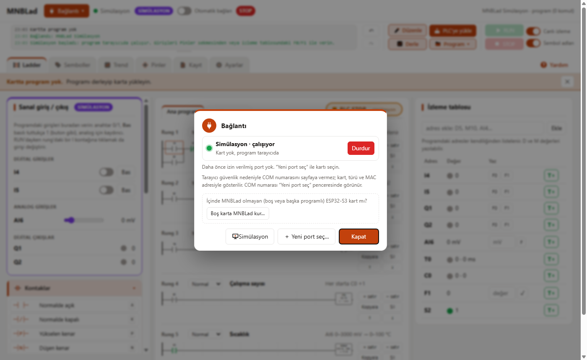
- Otomatik bağlan açıksa kart resetlendiğinde veya enerji gelip gittiğinde panel kendiliğinden yeniden bağlanır.
- Kart RUN'dayken bağlanırsanız panel, düzenleme için STOP'a alınıp alınmayacağını sorar. "RUN'da kalsın" derseniz program çalışmaya devam eder.
- Bağlanınca kartın saati PC saatine ayarlanır.
- ▶ Simülasyon: kart olmadan programı tarayıcıda çalıştırır (bkz. Bölüm 9).
2. Ekran düzeni
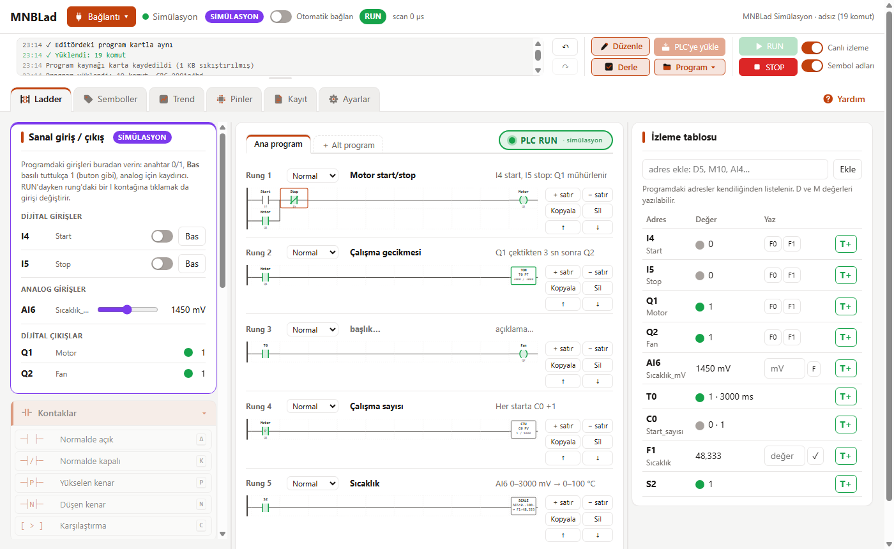
| Alan | Görevi |
|---|---|
| Üst çubuk | Bağlantı durumu, otomatik bağlan, RUN/STOP göstergesi, scan süresi, işlemci sıcaklığı ve bellek doluluğu |
| Bilgi akışı kutusu | Yapılan her işlemin ve uyarıların kaydı (en yeni üstte). Üzerine basılı tutunca son 15 satır açılır. Alt kenarındaki tutamaç sürüklenerek kutunun boyu değiştirilir (çift tık: varsayılan boy); boy tarayıcıda saklanır |
| ↶ ↷ | Geri al / yinele (Ctrl+Z / Ctrl+Y) |
| Düzenle | Düzenleme modunu açar/kapatır. RUN'daysa onay alıp PLC'yi STOP'a alır. STOP'ta bir elemana çift tıklayınca, paletten eleman koyunca veya kısayol tuşuna basınca düzenleme modu kendiliğinden açılır |
| Derle | Programı denetler; hata veya uyarı varsa Derleme sonucu penceresini açar. Düzenleme modu açıksa önce düzenlemeyi bitirir |
| PLC'ye yükle | Derler ve karta yükler (yalnız STOP'ta). Yüklemeden sonra PLC STOP'ta kalır |
| Program ▾ | Yeni program, Aç…, Kaydet… (.mnblad.json dosyası), Karttan al |
| RUN / STOP | PLC'yi çalıştırır / durdurur (onay sorar) |
| Canlı izleme | Rung'larda anlık durumları gösterir |
| Sembol adları | Adres yerine sembol adını gösterir (I4 yerine "Start") |
| Sekmeler | Ladder · Semboller · Trend · Pinler · Kayıt · Ayarlar |
| Sol sütun | Sembol paleti (gruplar tıklanınca açılır/kapanır); simülasyonda en üstte Sanal giriş / çıkış |
| Orta | Rung'lar ve sayfa sekmeleri (ana program / alt programlar). Sekmelerin en sağında PLC durumu: yeşil PLC RUN, sarı PLC STOP, gri PLC BAĞLI DEĞİL; simülasyonda yanında "simülasyon" yazar |
| Sağ sütun | İzleme tablosu |
Sol ve sağ sütunların genişliği aradaki tutamaçla sürüklenerek değiştirilebilir.
Açıklama balonları: Fare bir ladder elemanının üzerinde 2 saniye bekletilince bir balon açılır (fare geçip giderken açılmaz, başka elemana geçince kapanır): elemanın ne yaptığı, adresi, sembol adı ve açıklaması, özel adreslerin anlamı (ör. S1 → "1 Hz saat darbesi", S2 → "Hep 1", RT3 → "Saat: saat (0–23)", PW7 → "PWM çıkışı 0–1000 ‰"). Balon RUN'da, canlı izleme açıkken de çalışır; sistem bitlerini ezberlemek gerekmez. Paletteki düğmelerin üzerinde de elemanın açıklaması vardır.
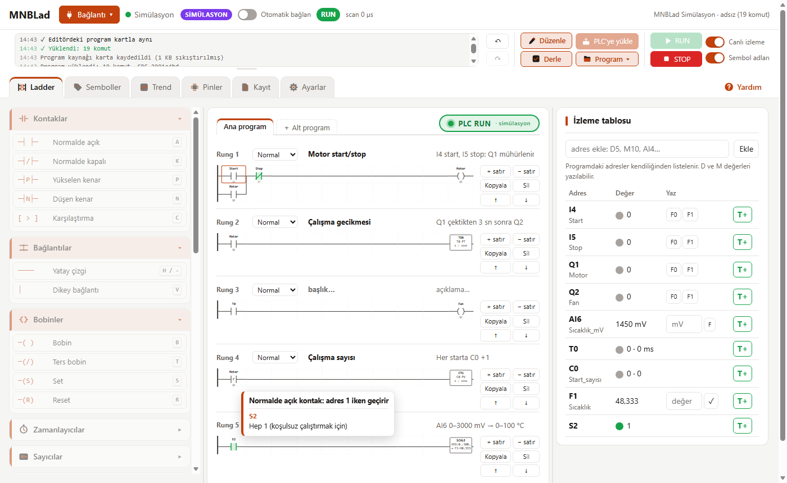
Derleme sonucu penceresi
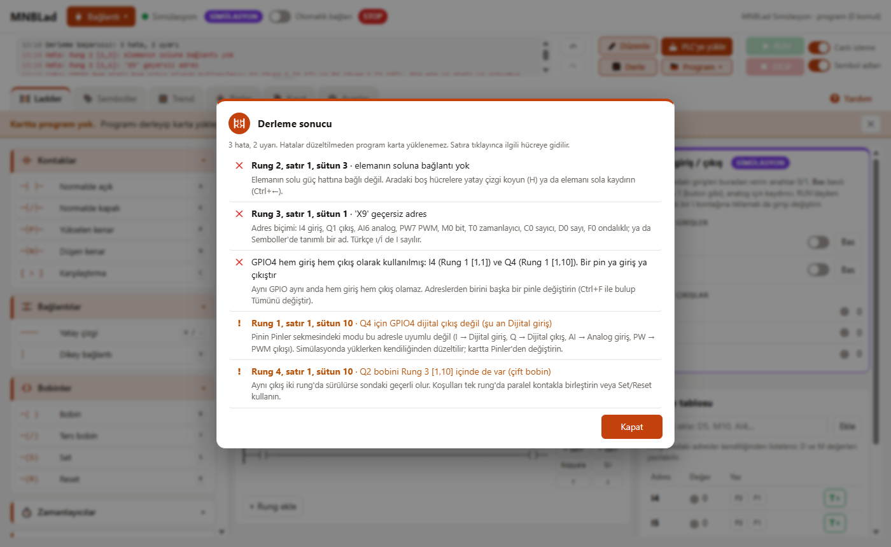
Derle veya PLC'ye yükle sırasında hata ya da uyarı çıkarsa pencere açılır:
- ✕ kırmızı satırlar hatadır: düzeltilmeden program karta yüklenmez.
- ! turuncu satırlar uyarıdır: yüklemeyi engellemez ama kontrol edilmelidir (ör. çift bobin).
- Her satırda yer (Rung, satır, sütun), sorun ve altında ne yapılması gerektiği yazar.
- Satıra tıklayınca pencere kapanır ve ilgili hücre seçilir (gerekirse sayfa sekmesi değişir).
Hatalar ve uyarılar ayrıca bilgi akışı kutusuna da yazılır.
"Editördeki program kartla farklı" uyarısı: editördeki program karttakiyle aynı değilse çıkar; karta geçmesi için Derle ve yükle gerekir. Kartta kayıtlı programı editöre almak için Program → Karttan al.
3. İlk program
Örnek: I4 butonuna basınca Q1 çıkışı yansın.
- Pinler sekmesinde GPIO4'ü Dijital giriş, GPIO1'i Dijital çıkış yapın (yalnız STOP'ta).
- Ladder sekmesinde Rung 1'in ilk hücresine tıklayın.
- A tuşuna basın (veya paletten "Normalde açık"). Adres kutusu açılır:
I4yazıp Enter. - Seçim sağa geçer. Son sütuna tıklayıp B (bobin) tuşuna basın,
Q1yazıp Enter. Aradaki boşluk yatay çizgiyle kendiliğinden dolar. - PLC'ye yükle, ardından RUN.
- I4'e 3,3 V verince Q1 yanar; canlı izlemede kontak ve bobin yeşil olur.
Hücre düzenleme: Bir elemanın adresini değiştirmek için çift tıklayın veya seçip Enter'a basın. PLC STOP'taysa düzenleme modu kendiliğinden açılır. RUN'daysa çift tık PLC'yi STOP'a alıp düzenlemeye geçer: kartta önce onay sorulur (makine durur), simülasyonda sorulmaz.
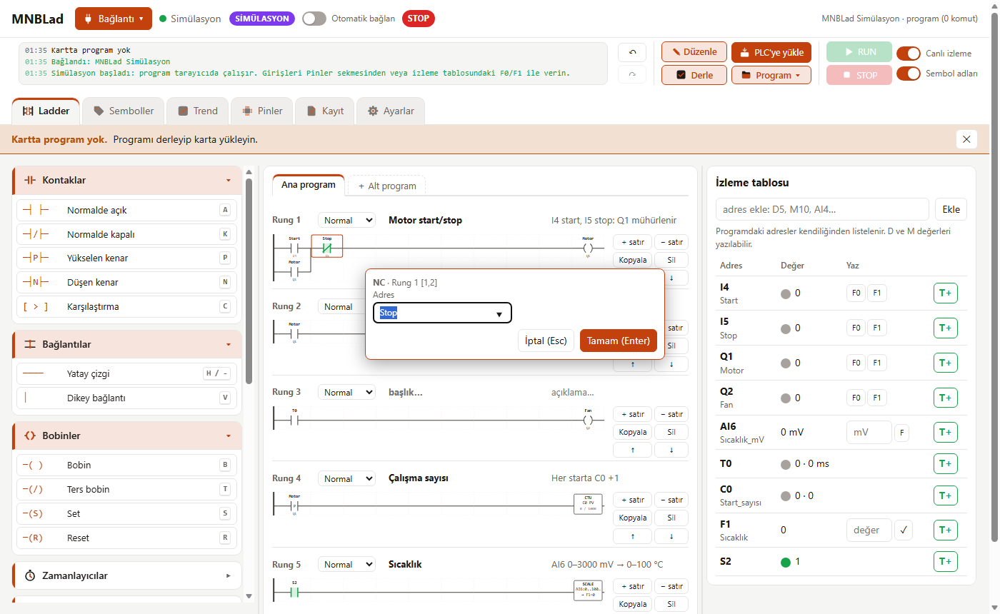
Silme: Delete seçili hücreyi siler; Backspace soldaki hücreyi silip seçimi oraya alır (metin siler gibi).
Kaydırma: Yazılmış bir elemanı silmeden taşımak için seçip Ctrl+← / Ctrl+→ (sola / sağa) veya Ctrl+↑ / Ctrl+↓ (üst / alt satıra) basın. Eleman komşu hücreyle yer değiştirir; seçim elemanla birlikte gider. Rung işlemleri her rung'un yanındaki düğmelerle yapılır: + satır, − satır, Kopyala, Sil, ↑, ↓.
Rung başlığı ve açıklaması: Her rung'un üstündeki "başlık…" ve "açıklama…" alanlarına yazılır; aramada da kullanılır.
4. Adresler
| Adres | Anlamı | Aralık | Not |
|---|---|---|---|
I4 | Dijital giriş (GPIO numarası) | Pin I/O olmalı | Pinler'de DI / DI pull-up / DI pull-down |
Q1 | Dijital çıkış | Pinler'de DO | |
AI6 | Analog giriş, mV | 0–3000 | Pinler'de Analog giriş (ADC pinleri) |
PW7 | PWM çıkışı, ‰ | 0–1000 | Pinler'de PWM; en çok 8 pin |
M0 | Yardımcı bit (iç röle) | M0–M255 | |
T0 | Zamanlayıcı (çıkış biti / geçen süre ms) | T0–T31 | |
C0 | Sayıcı (çıkış biti / değer) | C0–C31 | |
D0 | Tam sayı değişken (32 bit) | D0–D63 | |
F0 | Ondalıklı değişken | F0–F63 | 1.5 gibi ondalıklı sabit de yazılabilir |
HC0 / HF0 | Hızlı sayıcı değeri / frekansı (Hz) | HC0–HC3 | Pinler → Hızlı sayıcı |
RT0…RT8 | Saat: yıl, ay, gün, saat, dakika, saniye, haftanın günü (1 Pzt–7 Paz), günün dakikası, saat ayarlı | yalnız okunur | |
S0…S8 | Sistem bitleri | aşağıdaki tablo | |
100, -5, 2.5 | Sabit sayı |
| Sistem biti | Anlamı |
|---|---|
| S0 | İlk scan (RUN'a geçişte bir scan 1) |
| S1 | 1 Hz saat darbesi |
| S2 | Hep 1 |
| S3 | Hep 0 |
| S4 | 10 Hz |
| S5 | 2 Hz |
| S6 | 0,5 Hz |
| S7 | 1 dakika periyot |
| S8 | Kart saati ayarlı |
Adres yerine Semboller sekmesinde tanımlı ad da yazılabilir. Türkçe klavyede ı, i ve İ harfleri I sayılır: ı4, i4 ve I4 aynıdır; aı6 → AI6.
Giriş / çıkış yönü: Bir GPIO ya giriş ya çıkıştır.
- Pinler sekmesinde giriş (dijital veya analog) olarak atanmış pin ladder'da çıkış (
Q,PW) olarak kullanılamaz; çıkış olarak atanmış pin giriş (I,AI) olarak kullanılamaz. Derleme hata verir. - Aynı GPIO programda hem giriş hem çıkış olarak kullanılırsa (ör.
I4veQ4) derleme hata verir. - Pin Kapalı ise yalnız uyarı verilir; simülasyonda pinler yüklemede programa göre kendiliğinden ayarlanır.
Program nasıl çalışır: Kart her 10 ms'de bir scan yapar: girişleri okur → rung'ları yukarıdan aşağı, her rung'u soldan sağa çalıştırır → çıkışları yazar. RUN'a geçişte M, T, C, D, F sıfırlanır (kalıcı seçilenler hariç, bkz. Bölüm 10).
5. Ladder sembolleri
Her sembolün paletteki adı, klavye kısayolu ve örneği aşağıdadır. Kontaklar rung'un solunda, bobinler ve kutular sağında durur. Kutular (zamanlayıcı, matematik vb.) hattı geçirir; yani bir satırda arka arkaya birden fazla kutu kullanılabilir.
Fonksiyon numaraları (F + numara)
Temel semboller tek tuşla eklenir (A, K, P, N, C, B, T, S, R, H, V). Geri kalan fonksiyonlara 1'den başlayan numaralar verildi; paletteki düğmelerin sağında F·1, F·2 … rozeti olarak görünür.
- Ladder'da hücreyi seçip F tuşuna basın. Fonksiyon ekle penceresi açılır ve tüm numaralar listelenir.
- Numarayı yazın. Numara tek bir fonksiyonu gösteriyorsa (ör. 8 = MOV) hemen eklenir; 1 gibi başka numaraların da başı olan bir numarada Enter'a basın.
- Numara yerine ad da yazılabilir (ör. "ölçek" → SCALE, "TON"). Oklarla seçip Enter; Esc kapatır.
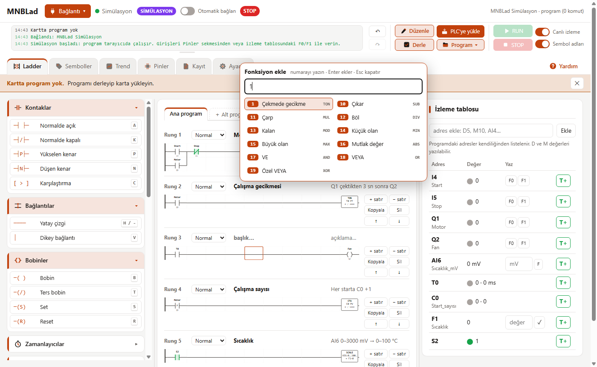
| No | Eleman | Komut | No | Eleman | Komut |
|---|---|---|---|---|---|
| 1 | Çekmede gecikme | TON | 17 | VE | AND |
| 2 | Düşmede gecikme | TOF | 18 | VEYA | OR |
| 3 | Darbe | TP | 19 | Özel VEYA | XOR |
| 4 | Birikimli zamanlayıcı | TONR | 20 | Ters | NOT |
| 5 | İleri sayıcı | CTU | 21 | Sola kaydır | SHL |
| 6 | Geri sayıcı | CTD | 22 | Sağa kaydır | SHR |
| 7 | İleri-geri sayıcı | CTUD | 23 | Ölçekle | SCALE |
| 8 | Taşı (kopyala) | MOV | 24 | PID kontrol | PID |
| 9 | Topla | ADD | 25 | Sınırla | LIMIT |
| 10 | Çıkar | SUB | 26 | Atla | JMP |
| 11 | Çarp | MUL | 27 | Alt program çağır | CALL |
| 12 | Böl | DIV | 28 | Dön | RET |
| 13 | Kalan | MOD | 29 | Zaman aralığı | TW |
| 14 | Küçük olan | MIN | 30 | Modbus oku | MBR |
| 15 | Büyük olan | MAX | 31 | Modbus yaz | MBW |
| 16 | Mutlak değer | ABS |
5.1 Kontaklar
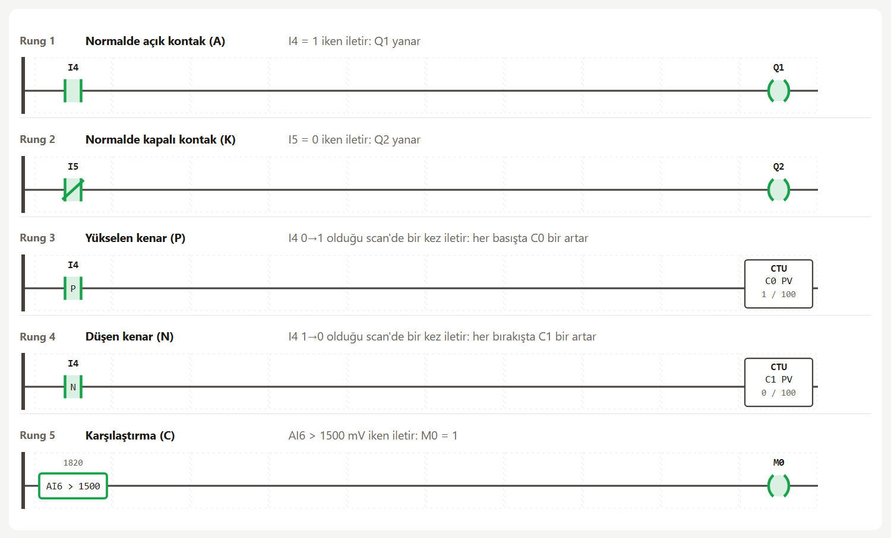
| Sembol | Kısayol | Açıklama |
|---|---|---|
─┤ ├─ Normalde açık | A | Adres 1 iken iletir. Örnek: I4 = 1 → Q1 yanar |
─┤/├─ Normalde kapalı | K | Adres 0 iken iletir. Örnek: I5 = 0 → Q2 yanar |
─┤P├─ Yükselen kenar | P | Adres 0→1 olduğu scan'de bir kez iletir. Örnek: her basışta C0 bir artar |
─┤N├─ Düşen kenar | N | Adres 1→0 olduğu scan'de bir kez iletir. Örnek: her bırakışta C1 bir artar |
[ > ] Karşılaştırma | C | İki değeri karşılaştırır: >, <, ≥, ≤, =, ≠. Örnek: AI6 > 1500 mV iken M0 = 1. Ondalıklı (F) değerlerle de çalışır |
5.2 Bağlantılar
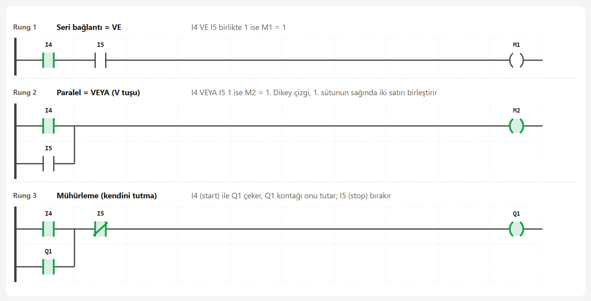
| Sembol | Kısayol | Açıklama |
|---|---|---|
──── Yatay çizgi | H veya - | Elemanları birbirine bağlar. Bobin yerleştirince aradaki boşluk kendiliğinden dolar |
│ Dikey bağlantı | V veya | | Seçili hücrenin solundan alt satıra bağlantı (açar/kapatır). Paralel dal = VEYA |
- Seri (aynı satırda arka arkaya) kontaklar VE işlemidir.
- Paralel dal için rung'a + satır ile satır ekleyin, alt satıra kontağı koyun ve dikey bağlantıyla birleştirin.
- Dikey çizgi, seçili hücrenin soluna (önceki hücreyle arasına) konur. Örnekteki Rung 2'de I4 ile I5'i birleştirmek için I4'ün sağındaki hücreyi (2. sütun) seçip V'ye basın. 1. sütunun solu güç hattıdır; orada satırlar zaten bağlıdır.
- Mühürleme (start/stop): start butonuna paralel, çıkışın kendi kontağı konur; stop butonu kapalı kontakla seri bağlanır (örnekteki Rung 3).
5.3 Bobinler
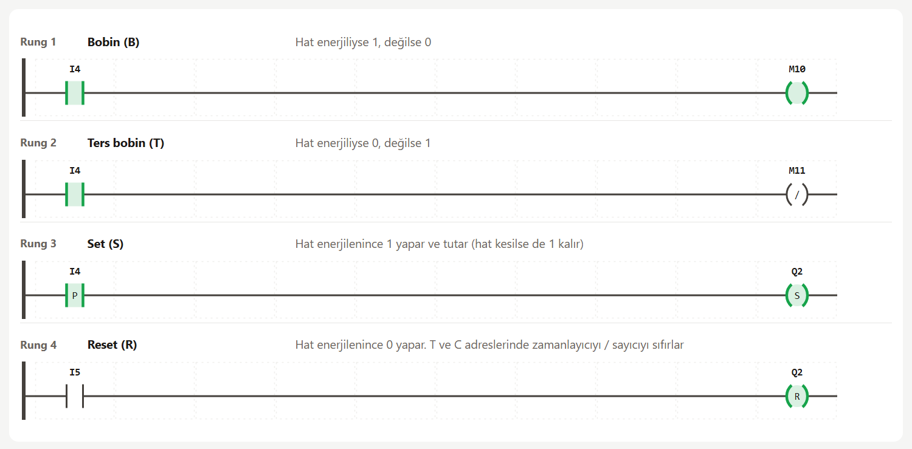
| Sembol | Kısayol | Açıklama |
|---|---|---|
─( ) Bobin | B | Hat enerjiliyse 1, değilse 0 |
─(/) Ters bobin | T | Hat enerjiliyse 0, değilse 1 |
─(S) Set | S | Hat enerjilenince 1 yapar ve tutar |
─(R) Reset | R | Hat enerjilenince 0 yapar. T adresinde zamanlayıcıyı, C adresinde sayıcıyı, HC adresinde hızlı sayıcıyı sıfırlar |
Aynı Q/M adresini iki ayrı bobinde kullanmak (çift bobin) derlemede uyarı verir: son yazan geçerli olur.
5.4 Zamanlayıcılar
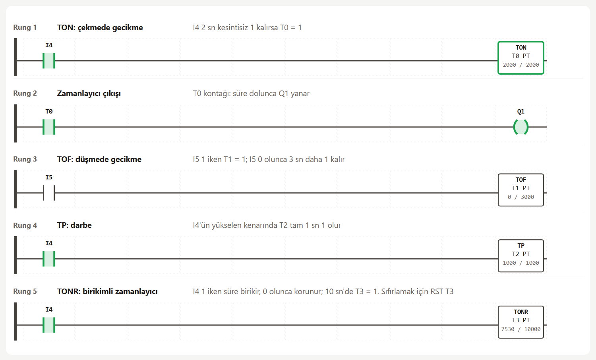
Kutu: zamanlayıcı numarası (T0–T31) ve süre (ms, sabit veya D). Kutunun altında geçen / süre görünür. Zamanlayıcının çıkışı, aynı numaralı T kontağı ile kullanılır (Rung 2).
| Sembol | Açıklama | Zaman çizelgesi |
|---|---|---|
| TON Çekmede gecikme | Giriş süre boyunca kesintisiz 1 kalırsa çıkış 1. Giriş 0 olunca hemen 0 | giriş ‾‾‾‾‾‾_ → çıkış __‾‾‾‾_ |
| TOF Düşmede gecikme | Giriş 1 iken çıkış 1; giriş 0 olunca süre kadar daha 1 kalır | giriş ‾‾_____ → çıkış ‾‾‾‾‾__ |
| TP Darbe | Girişin yükselen kenarında çıkış tam süre kadar 1 olur; bu sırada giriş değişse de etkilenmez | |
| TONR Birikimli | Giriş 1 iken süre birikir, 0 olunca korunur; toplam süre dolunca çıkış 1 kalır. Sıfırlamak için Reset bobini (T adresi). Çalışma saati sayacı için |
5.5 Sayıcılar
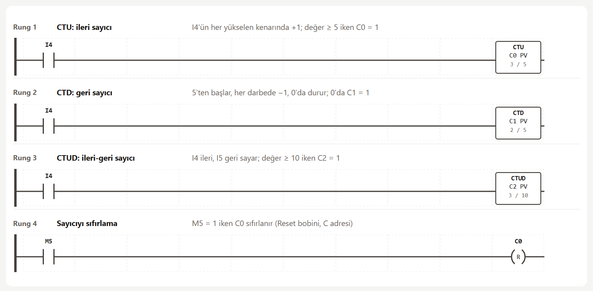
Kutu: sayıcı numarası (C0–C31) ve hedef (PV, sabit veya D). Kutunun altında değer / hedef görünür.
| Sembol | Açıklama |
|---|---|
| CTU İleri sayıcı | Girişin her yükselen kenarında +1. Değer ≥ hedef iken çıkış 1 |
| CTD Geri sayıcı | Hedeften başlar, her darbede −1, 0'da durur. 0'da çıkış 1. Reset hedefe döndürür |
| CTUD İleri-geri | Rung girişi +1, "geri sayma girişi" bitinin yükselen kenarı −1 (0'ın altına inebilir). Değer ≥ hedef iken çıkış 1. Reset 0 yapar |
Sayıcıyı sıfırlamak için Reset bobinine C adresi yazılır (Rung 4). Giriş filtresi (Pinler → Kart ayarları) kontak sıçramasının birden fazla sayılmasını önler.
5.6 Matematik
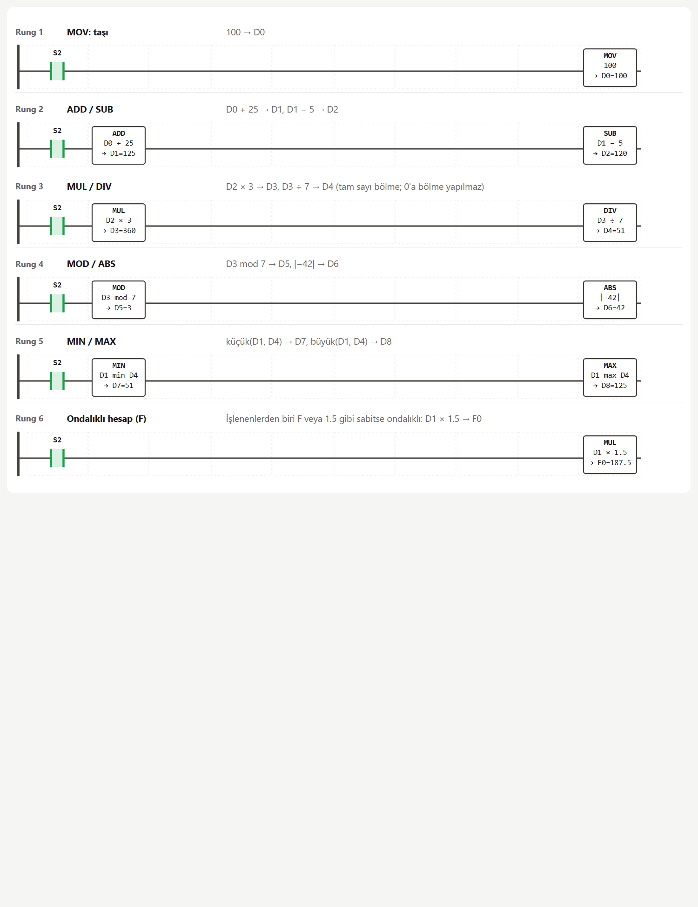
Hat enerjiliyse işlem her scan'de yapılır; sonuç hedefe yazılır. Hedef D, F, PW veya HC olabilir.
| Sembol | İşlem |
|---|---|
| MOV | Kaynak → hedef (kopyala) |
| ADD / SUB | A + B, A − B |
| MUL / DIV | A × B, A ÷ B (tam sayıda bölüm kesirsiz; 0'a bölme yapılmaz) |
| MOD | Bölümden kalan |
| MIN / MAX | Küçük / büyük olan |
| ABS | Mutlak değer |
Ondalıklı hesap: İşlenenlerden biri F veya 1.5 gibi ondalıklı sabitse kutu ondalıklı hesaplar (Rung 6: D1 × 1.5 → F0 = 187.5). Hedef D ise sonuç yuvarlanır (4.5 → 5, −4.5 → −5).
5.7 Kelime mantığı
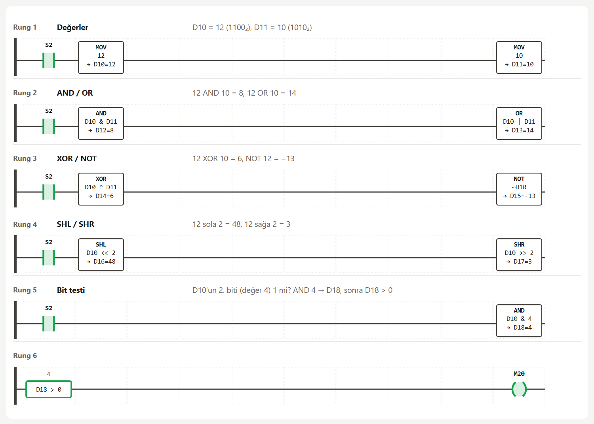
Değerlerin bitleri üzerinde işlem yapar.
| Sembol | İşlem | Örnek (D10 = 12 = 1100₂, D11 = 10 = 1010₂) |
|---|---|---|
| AND | Bit bit VE | 12 AND 10 = 8 |
| OR | Bit bit VEYA | 12 OR 10 = 14 |
| XOR | Bit bit özel VEYA | 12 XOR 10 = 6 |
| NOT | Bitlerin tersi | NOT 12 = −13 |
| SHL | Sola kaydır (×2ⁿ) | 12 sola 2 = 48 |
| SHR | Sağa kaydır (işaretsiz) | 12 sağa 2 = 3 |
Bit testi: Bir değerin belli bir bitine bakmak için AND ile maskeleyip karşılaştırma kullanın (Rung 5–6).
5.8 Analog: ölçekleme, sınırlama, PID
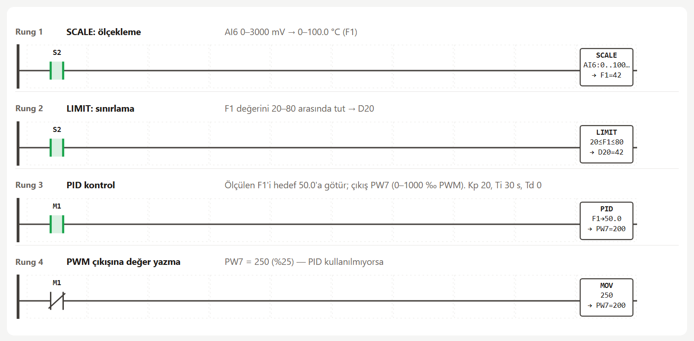
| Sembol | Açıklama |
|---|---|
| SCALE Ölçekle | Giriş aralığını çıkış aralığına doğrusal çevirir; sonuç çıkış aralığına sınırlanır. Örnek: AI6 0–3000 mV → 0–100.0 °C (F1) |
| LIMIT Sınırla | Değeri min–maks arasında tutar |
| PID kontrol | Ölçülen değeri (PV) hedefe (SP) götürür. Çıkış 0–1000 ‰: doğrudan PWM pinine (PW) bağlanabilir |
PID alanları: PV, SP, çıkış (PW/D/F), Kp kazanç (negatif = ters etki, ör. soğutma), Ti integral süresi (s; 0 = integral yok), Td türev süresi (s; 0 = yok).
- Hat enerjisizken PID durur, integral sıfırlanır, çıkış son değerinde kalır.
- Çıkış sınırdayken integral birikmez (hedefi aşmayı azaltır).
- Ayar başlangıcı: önce Ti = 0, Td = 0 ile Kp'yi salınım başlamadan biraz önceye kadar artırın; sonra Ti ile kalıcı hatayı giderin. Tepkiyi Trend sekmesinde izleyin.
5.8.1 PWM çıkışı (ayrıntılı örnek)
PWM çıkışı, pini çok hızlı açıp kapatarak ortalama bir güç verir: fan hızı, LED parlaklığı, ısıtıcı gücü, oransal valf, 0–10 V çevirici gibi. Değer ‰ (binde) cinsindendir: 0 = hep kapalı, 500 = %50, 1000 = hep açık.
Kurulum (bir kez):
- Pinler sekmesinde (STOP'ta) pini PWM çıkışı yapın, ör. GPIO7. En çok 8 PWM pini olabilir.
- Pinler → Kart ayarları → PWM frekansı: tüm PWM pinleri için ortaktır; seçenekler 100 Hz – 20 kHz (varsayılan 1 kHz). Değer yalnız STOP'ta değişir. Yüksek frekans (ör. 20 kHz) fan ve motorda duyulabilir ıslığı önler; sürücünün desteklediği frekansa bakın. Saniyede birkaç kez açıp kapanması gereken yükler (ör. SSR ile ısıtıcı) için PWM değil, zamanlayıcıyla sürülen Q çıkışı kullanılır.
- Ladder'da
PW7adresine değer yazan bir kutu kullanın. PW bir değişken gibi yazılır; bobinle değil, kutuyla sürülür.
PW'ye değer yazan kutular:
| Kutu | Ne zaman |
|---|---|
| MOV | Sabit değer: MOV 250 → PW8 (%25) |
| SCALE | Bir ölçümü PWM aralığına çevirmek: sıcaklık → fan hızı |
| PID | Bir değeri hedefte tutmak: çıkışı doğrudan PW olabilir |
| ADD / SUB / MUL / LIMIT | Hesaplanmış değer (sonuç 0–1000 dışında olursa 0 veya 1000'e sınırlanır) |
Örnek: sıcaklığa göre fan hızı ve LED parlaklığı
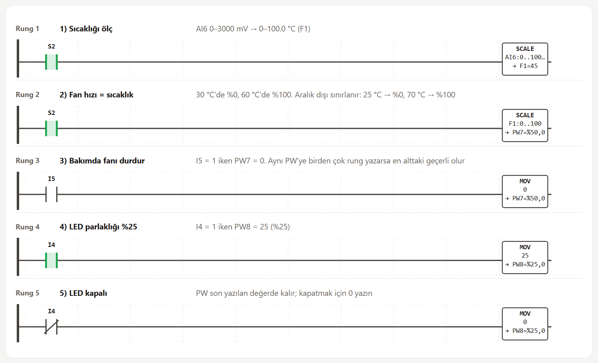
- Rung 1: AI6'daki sensör gerilimi (0–3000 mV) 0–100.0 °C'ye çevrilir → F1.
- Rung 2: F1 30 °C'de %0, 60 °C'de %100 olacak şekilde 0–1000'e çevrilir →
PW7. SCALE sonucu çıkış aralığına sınırlar: 25 °C'de 0, 70 °C'de 1000. Görselde 45 °C →PW7 = 500(%50). - Rung 3: Bakım anahtarı I5 = 1 iken
PW7 = 0(fan durur). Aynı PW'ye birden çok rung yazarsa en alttaki geçerli olduğu için bu rung SCALE'in altına konur. - Rung 4–5: I4 = 1 iken LED (
PW8) %25 yanar, I4 = 0 iken 0 yazılır. PW son yazılan değerde kalır: bobin gibi hat kesilince kendiliğinden 0 olmaz; kapatmak için 0 yazan bir rung gerekir.
Bilmeniz gerekenler:
- PLC STOP'ta tüm PWM çıkışları 0 olur.
- Değeri canlı izlemek için PW adresini izleme tablosuna veya trende ekleyin.
- Elle deneme (STOP'ta): Pinler sekmesindeki PWM grubunda her PWM kartında değer kutusu, kaydırıcı ve 0% / 25% / 50% / 75% / 100% düğmeleri vardır. Fanın veya LED'in tepkisini program yazmadan görürsünüz. RUN'da değeri program belirler, elle kumanda kapanır.
- Modbus slave ile dışarıdan yazılabilir: holding register
2000 + GPIO no(ör. PW7 → 2007). - Simülasyonda PWM çıkışı Sanal giriş / çıkış kartında yüzde olarak görünür.
- Kartın pini 3,3 V ve düşük akımlıdır: fan, motor veya güç LED'i doğrudan değil, MOSFET / sürücü üzerinden bağlanır.
5.9 Program akışı: atlama ve alt program
Ana program ve her alt program ayrı sayfa sekmesinde durur. ＋ Alt program yeni bir alt program sayfası (SBR) açar; sayfanın ilk rung'unun başlığı sayfa adı olur. Açık sekmedeki ✕ alt programı siler.
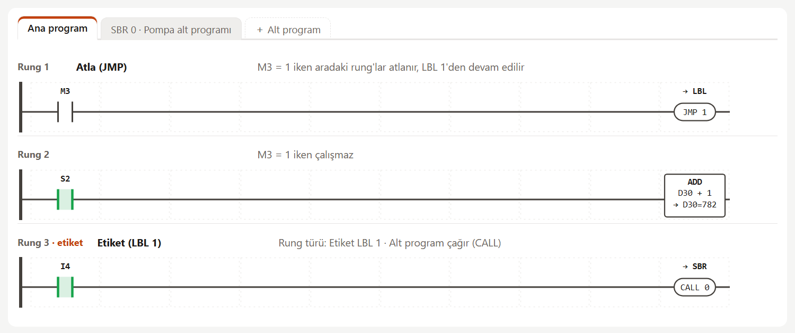
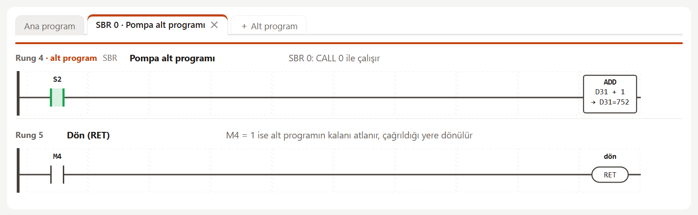
| Sembol | Açıklama |
|---|---|
| JMP n Atla | Hat enerjiliyse aradaki rung'lar atlanır, LBL n etiketli rung'dan devam edilir. Yalnız ileriye ve aynı sayfa içinde |
| LBL n Etiket | Rung başlığındaki "Rung türü" seçimiyle verilir |
| CALL n Alt program çağır | Hat enerjiliyse SBR n alt programı çalışır, bitince kaldığı yerden devam edilir. En çok 8 iç içe |
| RET Dön | Hat enerjiliyse alt programın kalanı atlanır, çağrıldığı yere dönülür. Ana programda scan'i orada bitirir |
Çağrılmayan alt program çalışmaz; içindeki zamanlayıcılar da ilerlemez. Hiç çağrılmayan alt programın sekmesinde ⚠ görünür.
5.10 Zaman
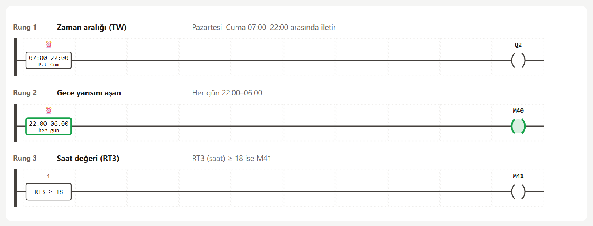
| Sembol | Açıklama |
|---|---|
| ⏰ Zaman aralığı (TW) | Seçilen günlerde açılış saatinden kapanış saatine kadar iletir. Kapanış açılıştan önceyse gece yarısını aşar (22:00–06:00). Saatler SS:DD veya D olarak girilir |
RT0–RT8 | Saat değerleri; karşılaştırma ve MOV ile kullanılır (Rung 3) |
Kart saati USB ile bağlanınca PC'den alınır. Enerji kesilince kaybolur; saat ayarlı değilken S8 = 0 olur ve zaman aralığı kontakları iletmez.
5.11 Haberleşme ve hızlı sayıcı
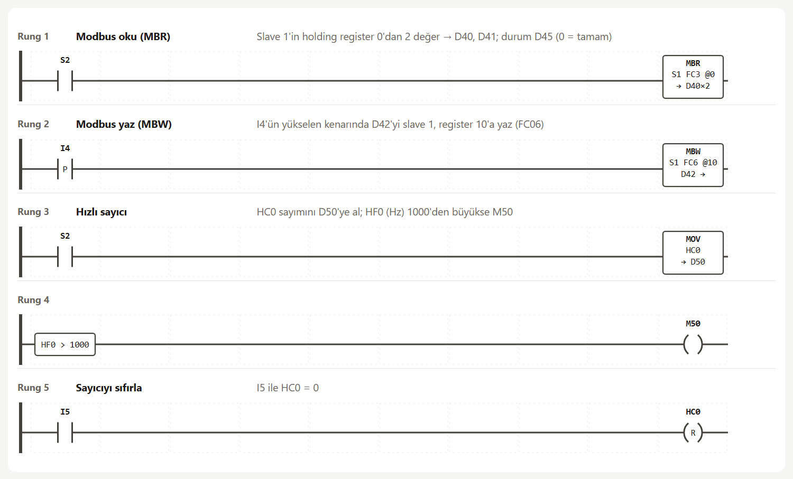
| Sembol | Açıklama |
|---|---|
| MBR Modbus oku | Master modunda slave cihazdan okur: FC01/02 (bit → M), FC03/04 (register → D veya F). Hat enerjili oldukça sürekli tekrarlanır |
| MBW Modbus yaz | D/M/F değerini slave'e yazar: FC05/06/15/16. Tek sefer için önüne yükselen kenar (P) koyun |
HC0 / HF0 | Hızlı sayıcı değeri ve frekansı; MOV, karşılaştırma ve Reset ile kullanılır |
MBR/MBW alanları: slave adresi (1–247; MBW'de 0 = yayın), fonksiyon, uzak adres, adet, yerel adres, durum D'si, kelime sırası (yalnız F için: ABCD veya CDAB). İşlem başarıyla bittiği scan'de kutunun çıkışı 1 olur.
| Durum D'si | Anlamı |
|---|---|
| 0 | Tamam |
| 1–11 | Slave'in döndürdüğü hata kodu (1 fonksiyon, 2 adres, 3 değer …) |
| −1 | Zaman aşımı (slave yanıt vermedi) |
| −2 | Bozuk yanıt / CRC hatası |
| −3 | Master kapalı (Pinler'de RS485 Master değil) |
| −4 | Geçersiz istek |
6. Semboller sekmesi
Adreslere anlamlı ad verilir (ör. I4 = Start). Ad, ladder'da adresin yerine görünür ve adres yazılan her yere yazılabilir. Programdaki adresleri ekle programdaki tüm adresleri listeye alır. Ara kutusu adres, ad veya açıklamaya göre süzer; sağda sembol sayısı, Kullanım sütununda adresin programda kaç yerde geçtiği görünür. Ad için harf, rakam ve _ kullanın; rakamla başlamasın.
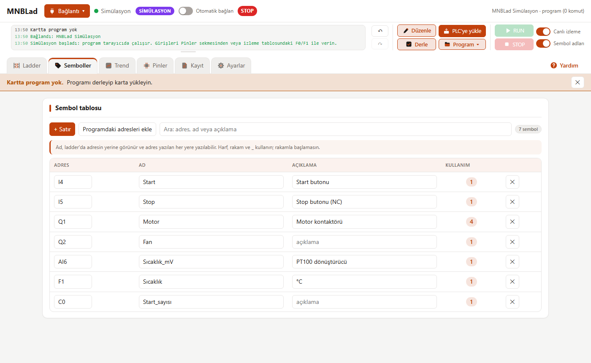
7. Bul / çapraz referans
Ctrl+F veya paletteki Bul / çapraz referans:
- Boş arama: programdaki tüm adresler, okunma/yazılma sayıları ve geçtiği rung'lar. Q/M'de birden fazla yazma turuncu görünür (çift bobin olabilir).
- Adres, sembol adı veya rung başlığıyla arama; satıra tıklayınca ilgili hücreye gidilir (gerekirse sayfa sekmesi değişir).
- Tümünü değiştir: bir adresi programın her yerinde başka adresle değiştirir (Ctrl+Z ile geri alınır).
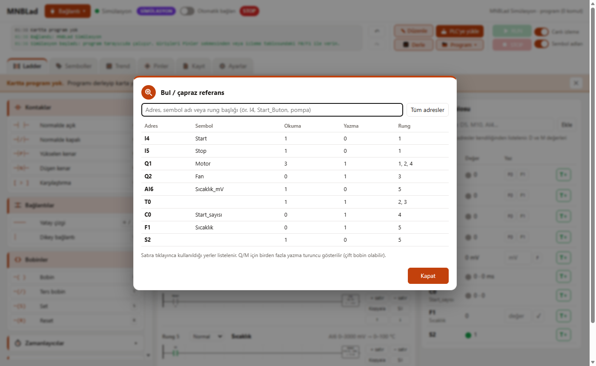
8. İzleme tablosu ve trend
İzleme tablosu (Ladder sağ sütun): programdaki adresler kendiliğinden listelenir; başka adres eklemek için üstteki kutuya yazıp Ekle.
- D, M, F ve HC değerleri yazılabilir (RUN'da da).
- I, Q ve AI zorlanabilir (force): F0/F1 biti 0/1'e, AI için mV değeri girip F; ✕F zorlamayı kaldırır. Zorlama varken kartın LED'i mor yanıp söner ve rung'da "F" işareti görünür.
- T+ / T−: adresi trend grafiğine ekler / çıkarır.
Trend sekmesi: en çok 4 adresin zaman grafiği. Sayılar üstte ortak eksende, bitler altta ayrı şeritlerde. Pencere süresi seçilebilir, Duraklat, Temizle, CSV indir.
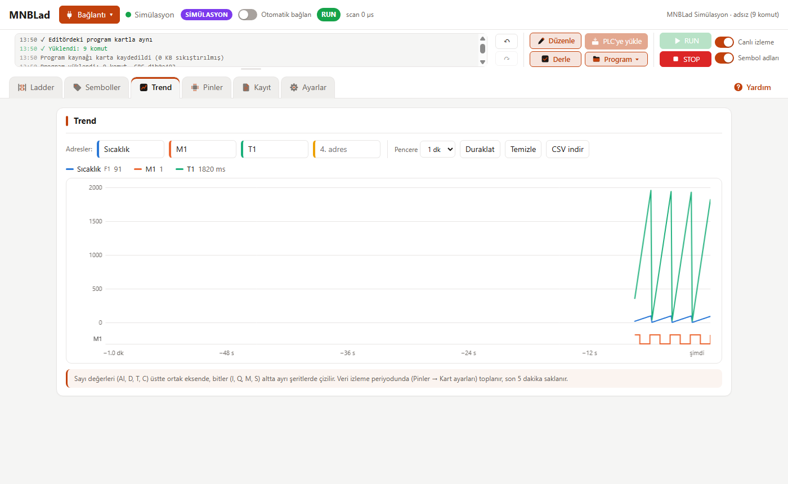
9. Simülasyon
Kart olmadan programı denemek için Bağlan → ▶ Simülasyon. Üst çubukta mor SİMÜLASYON etiketi görünür. Yükleme, RUN/STOP, canlı izleme, izleme tablosu, trend ve zorlama kartla aynı çalışır.
Programı deneme:
- Programı yazın, PLC'ye yükle. Simülasyonda programdaki pinler kendiliğinden ayarlanır (I → dijital giriş, Q → dijital çıkış, AI → analog giriş, PW → PWM).
- RUN.
- Ladder sekmesinde sol sütunun en üstünde Sanal giriş / çıkış kartı açılır. Programdaki her giriş ve çıkış burada listelenir:
- Dijital giriş: anahtar (0/1 kalır) veya Bas (basılı tuttukça 1, buton gibi).
- Analog giriş: kaydırıcı (0–3000 mV).
- Dijital çıkış: lamba; PWM çıkışı: yüzde.
- RUN'dayken rung'daki bir I kontağına tek tıklamak da o girişi açıp kapatır. Çift tık girişi değiştirmez, PLC'yi STOP'a alıp elemanı düzenlemeye açar.
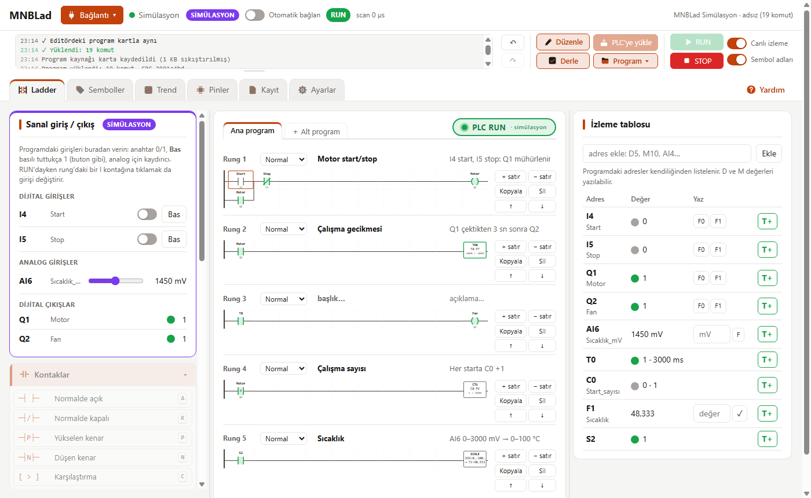
Girişler ayrıca Pinler sekmesindeki kartlardan (dijital girişte 1 yap / 0 yap, analog girişte mV kutusu ve kaydırıcı) ve izleme tablosundaki F0/F1 ile de verilebilir.
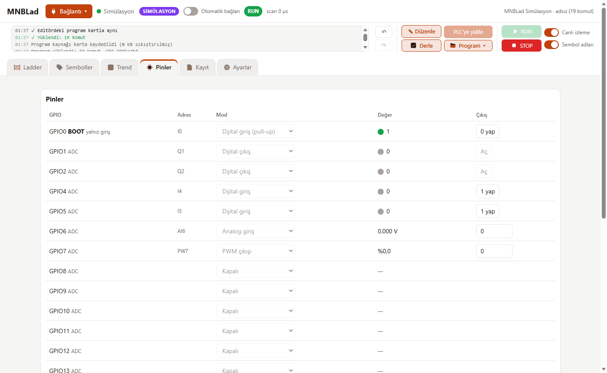
Simülasyonda olmayanlar: Modbus (MB kutusu durum −3 yazar), kalıcı hafıza, giriş filtresi, hızlı sayıcı (HC 0 okunur), firmware yükleme. Simülasyonu durdurmak için Bağlantı → Durdur.
10. Pinler sekmesi
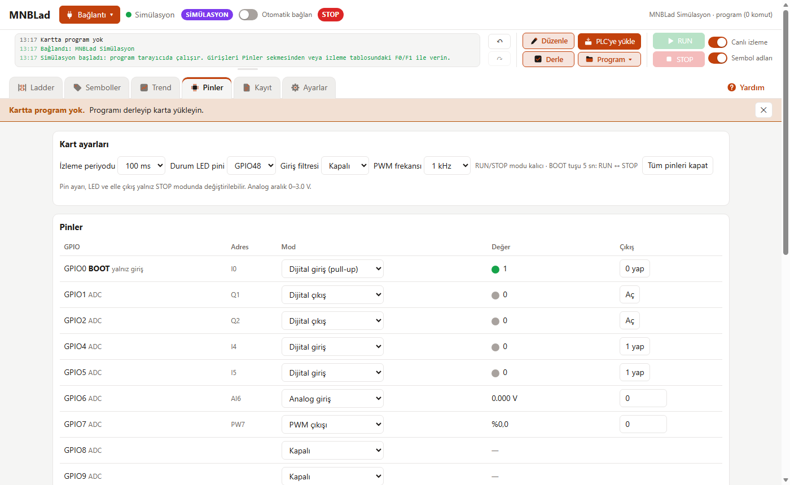
Kart ayarları alt alta listelenir; her satırda ayarın ne işe yaradığı yazar:
- İzleme periyodu: canlı izleme, izleme tablosu ve trendin güncellenme sıklığı (100 ms önerilir).
- Durum LED pini: kartın RGB LED'i (GPIO48).
- Giriş filtresi: dijital giriş bu süre sabit kalmadan değişiklik kabul edilmez (kontak sıçraması).
- PWM frekansı: tüm PWM pinleri için ortak (100 Hz – 20 kHz).
- RUN / STOP modu: kalıcıdır; BOOT tuşu 5 sn → RUN ↔ STOP.
- Tüm pinleri kapat: bütün pinleri Kapalı moda alır.
Pinler: pinler kullanılan ve kullanılmayan diye ikiye ayrılır.
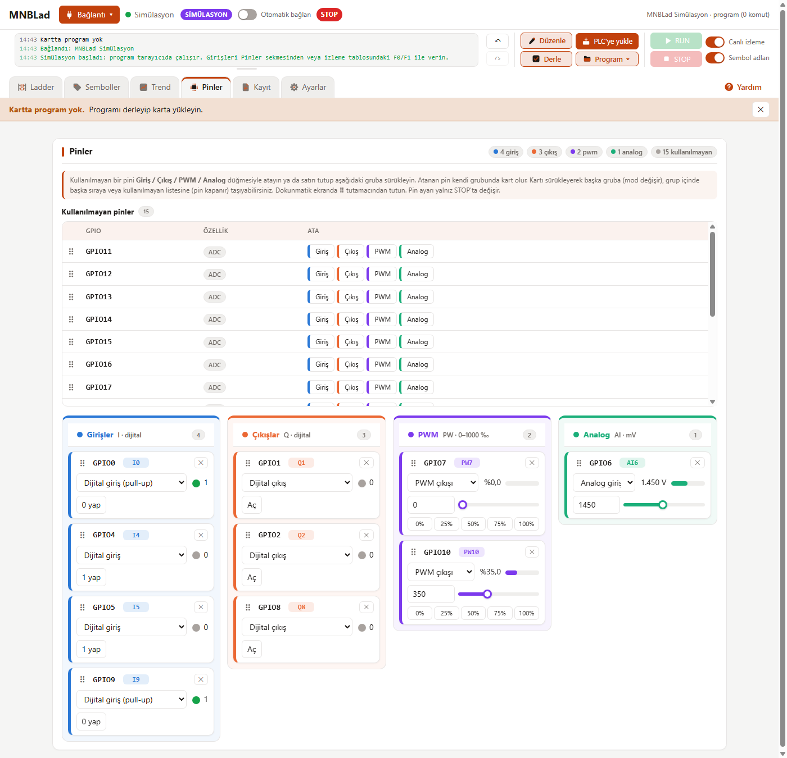
- Kullanılmayan pinler tablosu: Kapalı durumdaki pinler. Her satırda Giriş / Çıkış / PWM / Analog düğmeleri vardır; yalnız giriş pinlerinde Çıkış ve PWM, ADC olmayan pinlerde Analog pasiftir.
- Atanan pin listeden düşer ve aşağıda kendi grubunda kart olur: Girişler (mavi, I), Çıkışlar (turuncu, Q), PWM (mor, PW), Analog (yeşil, AI). Grup başlığında pin sayısı, kartın üstünde ladder adresi ve sembol adı görünür.
- Sürükle-bırak (fare veya parmak):
- Kullanılmayan satırı bir gruba bırakın → pin o türe atanır.
- Kartı başka gruba bırakın → mod değişir (ör. Çıkış → PWM).
- Kartı grup içinde başka bir kartın üstüne bırakın → sıra değişir (sıra tarayıcıda saklanır).
- Kartı kullanılmayan listesine bırakın veya ✕ → pin kapanır.
- Dokunmatik ekranda kartı ⠿ tutamacından tutun (kartın geri kalanı sayfayı kaydırır).
- Kartta mod seçimi (ör. Dijital giriş → pull-up), anlık değer ve elle kumanda vardır. STOP'ta: dijital çıkışta Aç / Kapat, PWM'de değer kutusu, kaydırıcı ve 0–100% düğmeleri. Simülasyonda dijital girişte 1 yap / 0 yap, analog girişte mV kutusu ve kaydırıcı.
- Pin ayarı yalnız STOP'ta değişir; RUN'da sürükleme ve atama kapalıdır.
Aktif LOW çıkış (firmware V3.1+): Yük, pin GND (0 V) olunca çalışıyorsa (ör. LOW tetiklemeli röle modülü, optokuplör katodu pine bağlı) çıkış kartında Aktif LOW işaretlenir.
- Ladder mantığı değişmez:
Q1= 1 veya PW değeri yine "açık" demektir; pine yazılan seviye terslenir. Kartta değerin yanında pin seviyesi yazar (ör. "1 · pin 0 V"). - STOP'ta, açılışta ve pin kapatılınca çıkış pasif seviyeye gider: aktif LOW pinde HIGH (3,3 V), normal pinde LOW. Böylece STOP'ta istenmeyen yükler çalışmaz.
- Aktif LOW PWM'de oran da terslenir (PW = 0 → pin sürekli HIGH, yük kapalı).
- Aktif LOW ayarlı pin kapatılınca (Kullanılmayan listesine gidince) dahili pull-up açık kalır; satırda pull-up yazar. Pin girişe çevrilince ayar silinir.
- Ayar kartta kalıcıdır ve cihaz profiline kaydedilir.
> Donanım notu: Açılış, reset ve firmware yükleme sırasında ESP32'nin pinleri bir süre boşta (yüksek empedans) kalır; bu sürede firmware çalışmaz. Yük o anda da kesin kapalı kalmalıysa çıkış hattına harici çekme direnci konmalıdır: aktif LOW yükte 3,3 V'a pull-up, aktif HIGH yükte GND'ye pull-down. Dahili pull-up zayıftır; değer sürücü katına göre seçilmelidir. Açılışta seviyesi özel olan pinleri (GPIO0, 3, 45, 46 ve USB pinleri 19/20) çıkış için kullanmayın.
Cihaz profili (kart tasarımı): Giriş-çıkışları değişmeyen kendi kartlarınız için pin düzeni cihaz adıyla dosyaya kaydedilir ve sonra tek seferde karta aktarılır.
- Cihaz olarak kaydet…: cihaz adı ve açıklama girilir. Dosyaya pin modları ve isteğe bağlı olarak kart ayarları (giriş filtresi, PWM frekansı, LED pini), RS485 ayarı, hızlı sayıcı ayarı ve pinlerin sembol adları (ör. Q1 = Röle_1) yazılır. Dosya adı
<cihaz adı>.mnblad-cihaz.json. - Cihaz dosyası aç…: dosya seçilince ne yapılacağı özetlenir ve onay istenir. Onaylanınca dosyadaki pinler ayarlanır, dosyada olmayan pinler kapatılır. PLC RUN'daysa STOP'a alınır. Dosyadaki sembol adları programa eklenir; programda aynı adres veya ad farklı tanımlıysa dokunulmaz.
- Çubukta son kaydedilen/açılan cihazın adı görünür. Karttaki pinler cihazla aynıysa yeşil ✓ pinler cihazla aynı, farklıysa turuncu pinler değişti yazar.
- Kartta yapılamayan ayarlar (ör. pin bu kartta yok, RS485'e ayrılmış) aktarımdan sonra liste halinde bildirilir.
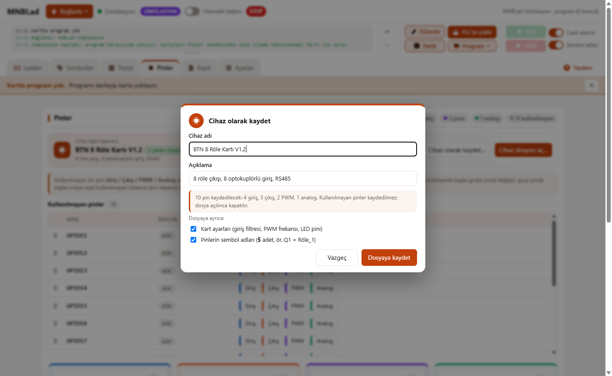
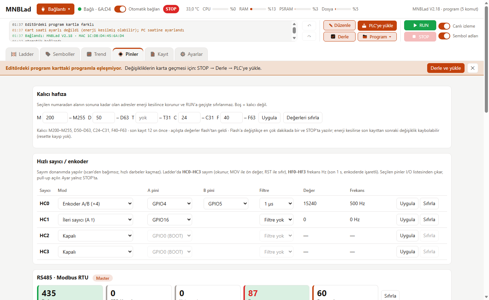
Kalıcı hafıza: M, D, T, C, F için bir başlangıç numarası verilir; o numaradan alanın sonuna kadar olan adresler enerji kesilince korunur ve RUN'a geçişte sıfırlanmaz (örnek: F40 → F40–F63, ayar katsayıları için). Değerler resette kayıpsız; enerji kesintisinde değiştikçe en çok dakikada bir ve STOP'ta kaydedilir, bu yüzden kesintiden hemen önceki son değişiklik kaybolabilir. Değerleri sıfırla kalıcı adresleri 0 yapar.
Hızlı sayıcı / enkoder (HC0–HC3): sayım donanımda yapılır, 10 ms'lik scan'den hızlı darbeler kaçmaz.
- Modlar: İleri sayıcı (A pini), Darbe + yön (A sayar, B = 1 ileri / 0 geri), Enkoder A/B ×4 (yönü kendisi algılar).
- Filtre: kısa parazit darbelerini yok sayar (1 µs / 10 µs).
- Seçilen pinler I/O listesinden çıkar. Sıfırla sayımı 0 yapar.
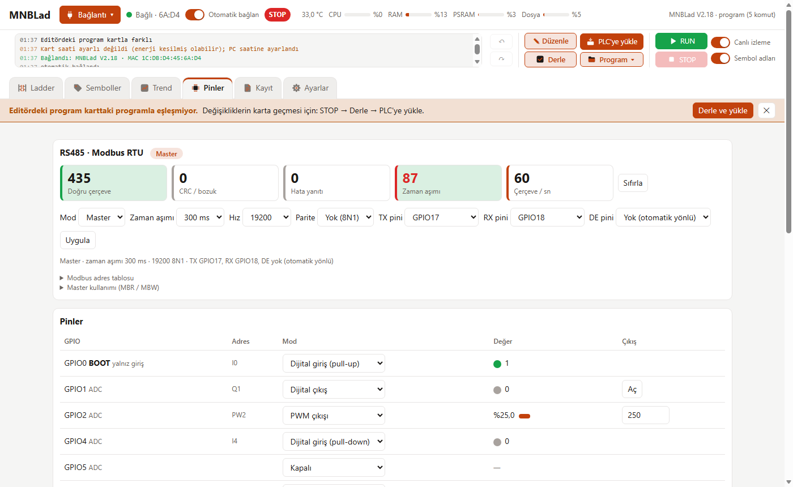
RS485 · Modbus RTU
- Mod: Kapalı / Slave (HMI veya SCADA kartı okur-yazar) / Master (kart, MBR/MBW kutularıyla başka cihazları okur-yazar).
- Adres (slave), hız, parite, TX/RX pinleri; DE pini otomatik yönlü modülde "Yok".
- Sayaçlar: doğru çerçeve, CRC/bozuk, hata yanıtı, zaman aşımı, çerçeve/sn.
- GPIO43/44 seçilirse COM portundaki hata ayıklama çıktısı kapanır.
Modbus slave adres haritası (0 tabanlı):
| Tür | Adres | PLC değeri | Erişim |
|---|---|---|---|
| Coil (FC01/05/15) | 0–48 | Q (GPIO no) | okunur |
| Coil | 100–355 | M0–M255 | okunur/yazılır |
| Giriş (FC02) | 0–48 · 100–131 · 200–231 | I · T0–T31 çıkışı · C0–C31 çıkışı | okunur |
| Input reg. (FC04) | 0–48 · 100–131 · 200–231 · 300–308 · 400–407 · 410–417 | AI mV · T geçen ms · C değeri · RT saat · HC (32 bit) · HF (32 bit) | okunur |
| Holding reg. (FC03/06/16) | 0–127 | D0–D63, 32 bit (2n üst, 2n+1 alt kelime) | okunur/yazılır |
| Holding reg. | 1000–1063 | D0–D63, 16 bit işaretli | okunur/yazılır |
| Holding reg. | 2000–2048 | PW (GPIO no), 0–1000 | okunur/yazılır |
| Holding reg. | 3000–3127 | F0–F63, float ABCD (Fn = 3000+2n üst kelime) | okunur/yazılır (FC16) |
| Holding reg. | 4000–4127 | F0–F63, float CDAB | okunur/yazılır (FC16) |
11. Kayıt sekmesi ve tanılama
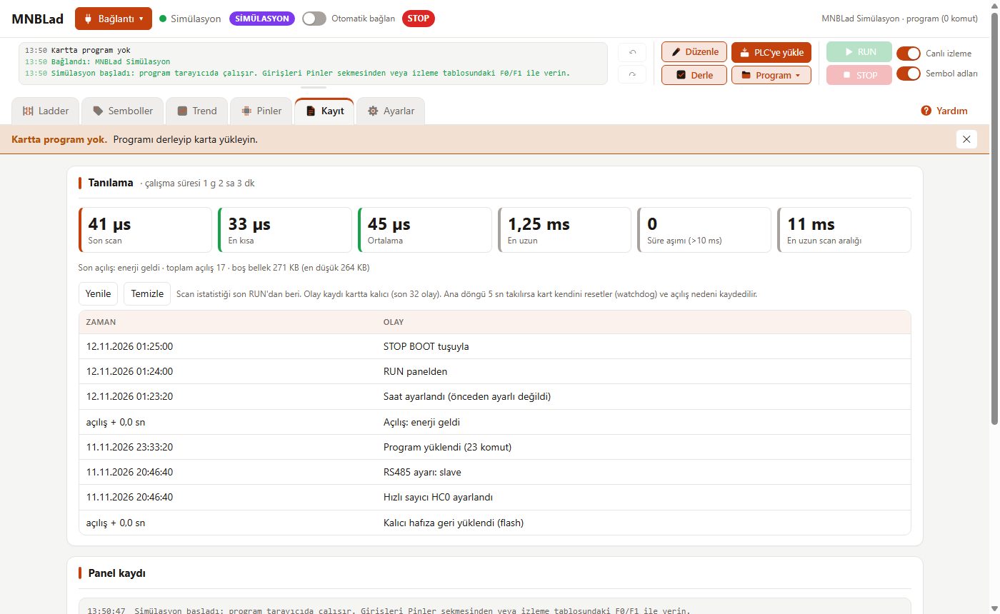
- Scan süresi: son, en kısa, ortalama, en uzun; 10 ms'yi aşan scan sayısı; en uzun scan aralığı. Kırmızı değerler programın kartı zorladığını gösterir.
- Son açılış nedeni (enerji, reset, USB, watchdog, düşük gerilim …), toplam açılış sayısı, boş bellek, çalışma süresi.
- Olay kaydı: son 32 olay kartta kalıcı tutulur (açılış, RUN/STOP ve kim yaptı, program yükleme, scan aşımı, ayar değişiklikleri, saat düzeltmesi, firmware güncellemesi). Sorunlu olaylar kırmızı.
- Program döngüsü 5 saniye takılırsa kart kendini resetler (watchdog) ve nedeni kaydeder.
Altta Panel kaydı: panelin bu oturumdaki ayrıntılı kaydı.
12. Ayarlar sekmesi
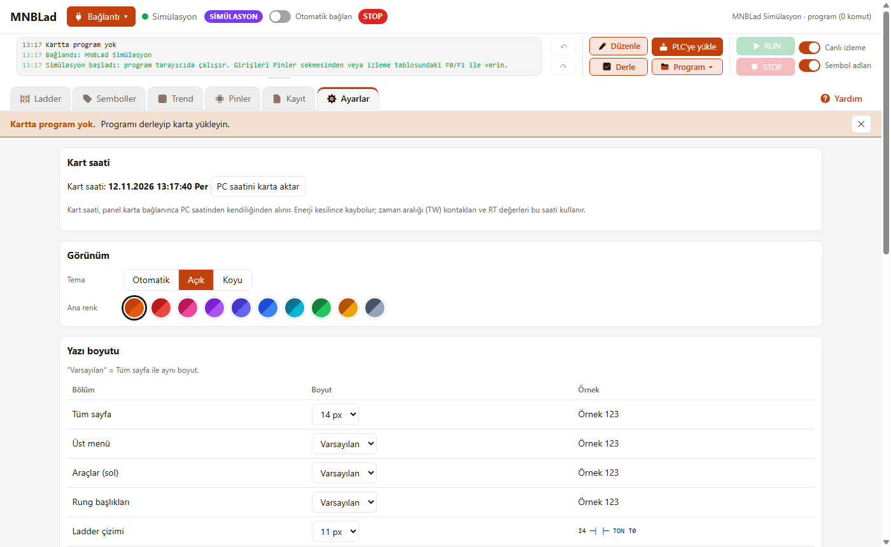
- Kart saati: kartın saati ve PC saatini karta aktar düğmesi. Panel karta bağlanınca saat kendiliğinden PC'den alınır; düğme elle yeniden göndermek içindir.
- Görünüm: tema (otomatik / açık / koyu) ve ana renk.
- Yazı boyutu: panelin her bölümü için ayrı.
- Program bilgisi: program adı, sürüm, açıklama (yüklemede karta yazılır).
- Firmware güncelleme: kartın yazılımı panelden güncellenir. Paketteki firmware'i yükle veya Dosyadan seç…. Program, semboller ve pin ayarları kartta korunur. Yükleme bitene kadar USB kablosunu çıkarmayın; bitince kart kendiliğinden yeniden başlar. Kart cevap vermezse Portu elle seç ve devam et; gerekirse kartı BOOT tuşu basılıyken RST ile indirme moduna alın.
13. RUN / STOP, BOOT tuşu ve LED
- RUN/STOP kalıcıdır: enerji kesilip gelince veya resetten sonra kart son moduyla açılır.
- Program değişikliği, pin ayarı, RS485 / hızlı sayıcı / kalıcı hafıza ayarı yalnız STOP'ta yapılır. PLC RUN'dayken programı değiştirmek için Düzenle (onay alıp STOP'a alır).
- STOP'ta tüm çıkışlar pasif olur: normal çıkış LOW, aktif LOW çıkış HIGH; PWM 0 (aktif LOW PWM'de pin sürekli HIGH). Bkz. Pinler → Aktif LOW çıkış.
- Karttaki BOOT tuşu 5 saniye basılı tutulursa RUN ↔ STOP geçer. LED yeni modun renginde 3 kez yanıp söner.
| LED | Anlamı |
|---|---|
| Yeşil | RUN |
| Sarı | STOP |
| Kırmızı | Hata (kayıtlı program geçersiz) |
| Mavi kısa yanıp sönme | Panelden komut geldi |
| Mor yanıp sönme | Zorlama (force) var |
14. Klavye kısayolları (Ladder sekmesi)
| Tuş | İşlev |
|---|---|
| A / K | Normalde açık / kapalı kontak |
| P / N | Yükselen / düşen kenar |
| C | Karşılaştırma |
| B / T | Bobin / ters bobin |
| S / R | Set / Reset |
| H veya - | Yatay çizgi |
| V veya | | Dikey bağlantı (seçili hücrenin soluna) |
| F, sonra numara | Numaralı fonksiyon ekle (TON, MOV, SCALE …; bkz. Fonksiyon numaraları) |
| Enter | Seçili elemanın adresini düzenle |
| Delete / Backspace | Seçili hücreyi sil / soldaki hücreyi silerek geri git |
| Oklar | Hücreler arasında gez |
| Ctrl+← / Ctrl+→ / Ctrl+↑ / Ctrl+↓ | Seçili elemanı silmeden kaydır |
| Ctrl+Z / Ctrl+Y | Geri al / yinele |
| Ctrl+C / Ctrl+X / Ctrl+V | Hücre kopyala / kes / yapıştır (Ctrl+Shift+C rung kopyala) |
| Ctrl+F | Bul / çapraz referans |
15. Sorun giderme
| Belirti | Çözüm |
|---|---|
| "Bağlan" listesinde kart yok | ＋ Yeni port seç… ile kartı seçin; kartın USB portunun kullanıldığından ve kablonun veri kablosu olduğundan emin olun |
| Bağlanırken port meşgul hatası | Kartı kullanan başka program/sekme açık olabilir; kapatın |
| "Program yüklemek için önce STOP" | STOP'a alın veya Düzenle |
| "Editördeki program kartla farklı" | Derle → PLC'ye yükle; ya da kartınkini almak için Program → Karttan al |
| Derleme hatası "soluna bağlantı yok" | Elemanın solundaki hücreler boş; yatay çizgi (H) ile bağlayın |
| Uyarı "dijital giriş değil" | Pinler'de pinin modunu adresle uyumlu yapın (I için DI, Q için DO, AI için Analog, PW için PWM) |
| Hata "… olarak atanmış; giriş/çıkış olarak kullanılamaz" | Pin Pinler'de ters yönde ayarlı. Pinin modunu değiştirin ya da ladder'da başka pin kullanın |
| Hata "GPIOn hem giriş hem çıkış" | Aynı pin I ve Q (veya AI ve PW) olarak kullanılmış; birini başka pinle değiştirin (Ctrl+F → Tümünü değiştir) |
| PWM çıkışı hiç değişmiyor / kapanmıyor | PW'ye kutuyla (MOV, SCALE, PID) değer yazılmalı; son yazılan değer kalır, kapatmak için 0 yazın (bkz. 5.8.1) |
| Sayıcı bir basışta 2–3 sayıyor | Pinler → Giriş filtresi'ni artırın (ör. 20 ms) |
| Zaman aralığı (TW) hiç iletmiyor | Kart saati ayarlı değil (enerji kesilmiş): panelle bağlanın veya Ayarlar → Kart saati → PC saatini karta aktar |
| Modbus durum −1 | Slave yanıt vermiyor: kablo (A/B), slave adresi, hız ve parite aynı mı? |
| Kart kırmızı yanıyor | Kayıtlı program geçersiz (ör. pin ayarı değişti); programı yeniden yükleyin |
| Firmware yükleme "Failed to connect" | Panelden bağlantıyı kesip tekrar deneyin; olmazsa BOOT basılıyken RST'ye basıp Portu elle seç ve devam et |